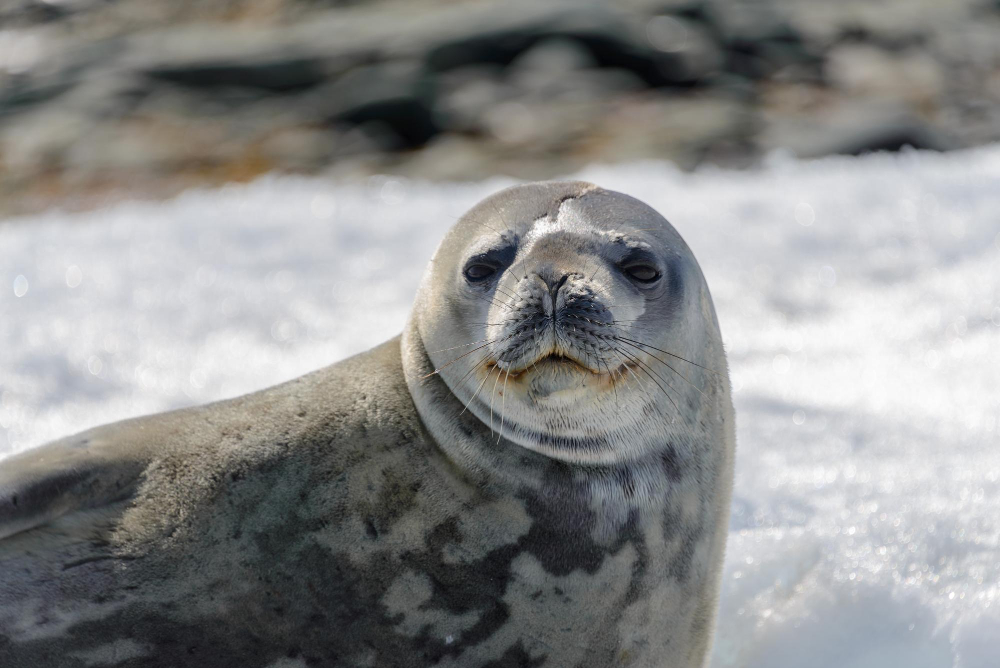

Las focas habitan en diversas zonas del planeta, aunque la mayoría prefiere regiones frías o templadas. Suelen encontrarse en costas, plataformas de hielo, islas rocosas y en mar abierto. Algunas especies viven cerca del Ártico y la Antártida, mientras que otras prefieren las costas del Pacífico o el Atlántico Norte.
Dependiendo de la especie, las focas pueden adaptarse a diferentes tipos de hábitats. Algunas pasan más tiempo en el mar, alejadas de la costa, mientras que otras vuelven frecuentemente a tierra firme para descansar, reproducirse o mudar el pelaje. Son animales muy dependientes del hielo marino en ciertas regiones, lo que los hace vulnerables al derretimiento del hielo por el cambio climático.
Algunas especies, como la foca cangrejera, se han adaptado a vivir en ecosistemas marinos extremadamente fríos y cubiertos de hielo, desplazándose largas distancias bajo el agua para encontrar grietas en el hielo donde puedan salir a respirar. Por otro lado, especies como la foca común pueden encontrarse en estuarios, bahías y ríos, mostrando una notable tolerancia al agua salobre. Además, ciertos grupos de focas forman colonias densas durante la época de cría en playas aisladas o bancos de arena, lugares que ofrecen protección frente a depredadores terrestres. La elección del hábitat también puede depender de la disponibilidad de presas, como peces, crustáceos o cefalópodos, lo que las lleva a moverse constantemente en busca de alimento.